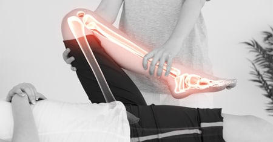

El experto afirma que puede eliminar incluso una osteocondrosis de 18 años en solo unos meses. Es capaz de ayudar incluso al paciente más anciano que sufre de artritis compleja en solo 78 días. Respecto al dolor articular, asegura que si Usted sigue la terapia recomendada y actúa según las indicaciones, ¡cualquier dolor se aliviará en solo 4 días! Y 48 años de práctica del experto confirman cada una de sus afirmaciones. Inmediatamente después de la transmisión del programa "Cómo cuidar y proteger las articulaciones a cualquier edad" en la televisión chilena, el famoso profesor Juan Palacios accedió a darnos una entrevista.
- ¡Buenas tardes, Sr. Palacios! Digame, ¿es cierto que los problemas articulares y la osteocondrosis son acompañantes inevitables de todas las personas mayores?
¡Buen día! Me alegro de verle y me alegro de que haya hecho esta pregunta. Mi respuesta es, por supuesto, que no. El compañero inevitable de la vejez es su confianza en los expertos, a los que ha acudido durante años, pero que siguen sin poder eliminar su problema. En los expertos que culpan a la vejez de todo y ni siquiera quieren ver la esencia del problema. De hecho, se puede deshacerse de los problemas de las articulaciones a cualquier edad.
Si conoce el secreto, puede resolver el problema rápidamente sin salir de la casa, como hacen miles de mis clientes.

El secreto es entender por qué una persona siente dolor. Las enciclopedias presentan hasta 69 posibles
razones para el desarrollo de osteocandrosis y artrosis, pero las consecuencias más obvias de estos
problemasson: las articulaciones, las vértebras y los cartílagos pierden elasticidad, lo que provoca
dolor. Todo esto sucede debido a trastornos circulatorios. El secreto es simple: en primer lugar
es
necesario restaurar el suministro de sangre a las articulaciones.
- ¡Disparates! He ayudado a personas que antes solo se movían en silla de ruedas. Para ellas, la discapacidad era una sentencia, ¡pero incluso ellas volvieron a caminar! De acuerdo, este es un logro mucho más significativo que otros problemas a los 45 años.
- ¿Cuánta gente ha salvado de la silla de ruedas?
Mucha, ni siquiera puedo dar una cifra exacta. Pero la mayoría de mis clientes son personas mayores de
40
años que tienen muchas problemas con la edad. Vienen a mí con problemas como la osteocandrosis, la
artrosis, la artritis, la radiculitis y los nervios pinzados, todo lo cual complica enormemente su vida
diaria.
Mis clientes lloran de dolor, incluso caminar les resulta difícil. Todas son personas comunes, no ex
atletas ni personas discapacitadas. A menudo escucho: "¿Por qué yo?" Y yo respondo: "Todo está bien, no
desesperemos, simplemente restauremos la circulación sanguínea".
- ¿Cómo se puede normalizar la circulación sanguínea a esta edad?
Hasta hace poco, ayudábamos a nuestros clientes con actividades físicas. Hacían ejercicios difíciles en máquinas. Este es un método muy efectivo, pero es bastante difícil y requiere mucho tiempo. Es bastante difícil, y muchos no tienen tiempo para el gimnasio.
Estaba convencido de que tenía que haber un método diferente, más moderno y más simple, y al final lo encontré
- ¡Es muy interesante! ¿Puede contarles a nuestros lectores más sobre su método?
Sí, nuestro centro fue el primero del mundo en tener acceso al producto más innovador para la
terapia
de la osteocondrosis y el dolor articular, que se basa en los antiguos conocimientos chinos. Admito
que cuando lo escuché por primera vez, me reí porque no creía en su efectividad. Pero después del final
de
las pruebas, me quedé perplejo: 4.567 personas se recuperaron por completo de los problemas que
padecían, o el 94% de los encuestados. El 98% se sintió mucho mejor y solo el 0,4% no notó ningún
cambio.
- ¿De qué producto está hablando?
Me refiero a las cápsulas especiales .
Este es un producto que permite, en muy poco tiempo, unos 4 días, eliminar por completo los dolores de
espalda y de articulaciones y recuperarse por completo incluso en los casos más severos en pocos meses.
Las cápsulas solo se producen en la región noroeste de Europa, y la Cruz Roja chilena está gastando
casi
800 millones de pesos para apoyar este producto. Además, hemos destinado unos 250 millones de pesos por
el
derecho exclusivo a vender estas cápsulas en Chile.
- ¿Cómo funcionan estas cápsulas milagrosas?
Aquí no hay milagro, solo ciencia y los últimos avances de los científicos. contiene solo
ingredientes activos naturales que tienen como objetivo eliminar la inflamación, restaurar la
circulación
sanguínea y patologías de los discos intervertebrales. Gracias al uso regular de las cápsulas, los
problemas de las articulaciones y del sistema musculoesquelético dejan de desarrollarse.
Incluso con una simple toma de las cápsulas, se activan alrededor de 930.000
células, lo que ayuda a mejorar el flujo sanguíneo
- Impresionante. Pero cuéntenos con más detalle, ¿qué esto significa para nosotros, para la gente
común?
Esto significa que los métodos medievales quedaron en el pasado. Ahora se puede ayudar a las
articulaciones en
casa en solo uno o dos meses de uso constante del producto. Las cápsulas
no solo alivian el dolor, sino que actúan a nivel celular, eliminando la causa del dolor y restaurando
las
articulaciones y la columna a su estado original. Las cápsulas no solo alivian los síntomas del
problema, sino que eliminan la causa: normalizan el flujo sanguíneo y permiten que las células se
renueven.
Podemos decir que lanza las propiedades regeneradoras del cuerpo después la primera toma, y
Usted
notará de inmediato cómo desaparece el dolor. La terapia dura en promedio de un mes a 2 meses,
según los fáctores individuales. Después de un curso, la microcirculación sanguínea mejorará,
las
paredes de los vasos sanguíneos se fortalecerán, los procesos metabólicos mejorarán y se acelerará la
regeneración del tejido cartilaginoso.
- ¿ solo ayuda en caso de artrosis y osteocondrosis?
¡No! Repito: actúa a nivel celular, restaurando el flujo sanguíneo. Resuelve cualquier problema
relacionado
con las articulaciones y la columna vertebral: artrosis y artritis, ciática, reumatismo, ciática,
osteocandrosis, así como dislocaciones, esguinces, lesiones, contusiones y fracturas
también se recomienda para lesiones deportivas y tensión muscular.
Y lo más importante, las cápsulas eliminan todos estos problemas y no solo alivian temporalmente los
síntomas.
realmente alivia el dolor (en las primeras etapas de la terapia), pero luego elimina completamente el
problema. Por favor, comprenda: me encantan los deportes y el fitness y nunca dejaré de practicarlos y
recomendarlos, pero para la mayoría de los pacientes, es el remedio más simple, efectivo y
económico..
- Supongo que mucha gente preguntará: "¿Dónde puedo comprar ?"
Queríamos vender en farmacias a una escala más amplia, pero no podíamos estar de acuerdo con
los
farmacéuticos, ya que podría poner en peligro su negocio y afectar negativamente los ingresos.
Durante años, la gente ha estado comprando remedios costosos que solo alivian el dolor y no pueden
eliminar la causa del problema, y esto suele ser lo mejor para las compañías farmacéuticas.
Por este motivo, decidimos vender solo en la web oficial, lo que, por cierto, aporta una serie
de ventajas: venta sin intermediarios, y por tanto el precio es unas 5 veces más bajo que en otros
países.
La entrega se realiza mediante el servicio de mensajería, el pago se realiza al recibir el paquete. Para
usar este producto no necesita consulta, la terapia se realiza en casa. Créame: esto es
muy
efectivo. También Usted puede probar otros productos, pero estoy convencido de que no encontrará nada
más
eficaz
que .
- Sr. Palacios, ¡gracias por la entrevista! ¿Quiers decirles algo más a nuestros lectores antes de
despedirse?
Sí, por supuesto. Me gustaría llamar la atención de los lectores sobre el hecho de que los problemas
de
la columna y las articulaciones progresan con bastante rapidez, e incluso el dolor recurrente leve puede
ser motivo de preocupación.
Y recuerda: las patologías provocadas por dolores de espalda y articulaciones, no solo provocan
molestias,
sino que también acortan la vida en 10-15 años.
P. S.:
Después la entrevista, Sr. Palacios nos sorprendió gratamente: acordó con el fabricante de
unas condiciones especiales para la compra de estas cápsulas para nuestros lectores. Y ahora Usted tiene
la
oportunidad única de pedir con un descuento adicional a un precio muy competitivo. No solo
puede
ahorrar en la compra de este remedio súper efectivo, sino que, lo más importante, se olvidará por
completo
de los problemas asociados con las articulaciones y la columna vertebral.
La entrevista fue preparada por Sandra Martinez
Foto tomada de fuentes abiertas
Comentarios: